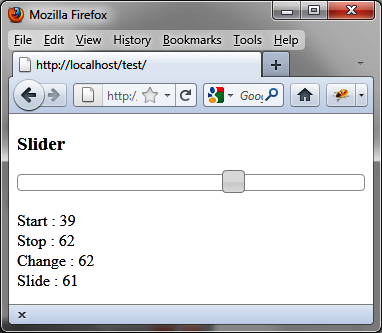
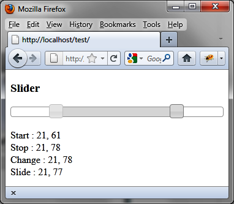
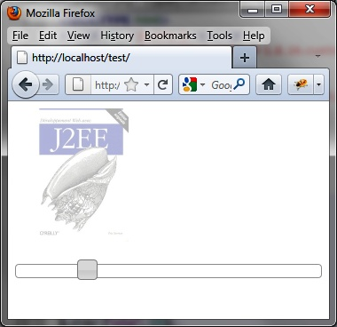

{% include JB/setup %}
{% raw %}
<div>
<div class="book" title="Examples of Using Sliders"><div class="book"><div class="book"><div class="book"><h1 class="title2"><a id="examples_of_using_sliders" class="calibre1"></a>Examples of Using Sliders</h1></div></div></div><p class="calibre7">Let’s put our knowledge of sliders to use with some basic examples.
    In this section, we’ll write script that creates and manages one or
    multiple sliders.</p><div class="book" title="Displaying the Value of One Indicator"><div class="book"><div class="book"><div class="book"><h2 class="title5"><a id="displaying_the_value_of_one_indicator" class="calibre1"></a>Displaying the Value of One Indicator</h2></div></div></div><p class="calibre7">Let’s start with a single indicator that displays the value when
      <code class="literal">start</code>, <code class="literal">stop</code>, <code class="literal">slide</code>, and <code class="literal">change</code> events occur.</p><p class="calibre7">We first get the value of the indicator at each event, then we
      display it in the field for the event. This allows us to see when each
      event is triggered by jQuery UI:</p><a id="I_programlisting7_d1e5529" class="firstname"></a><pre class="programlisting">&lt;!DOCTYPE html&gt;
&lt;script src = jquery.js&gt;&lt;/script&gt;
&lt;script src = jqueryui/js/jquery-ui-1.8.16.custom.min.js&gt;&lt;/script&gt;

&lt;link rel=stylesheet type=text/css
      href=jqueryui/css/smoothness/jquery-ui-1.8.16.custom.css /&gt;

&lt;h3&gt; Slider &lt;/h3&gt;
&lt;div id=slider&gt;&lt;/div&gt;&lt;br /&gt;
Start : &lt;span id=valuestart&gt;&lt;/span&gt;&lt;br /&gt;
Stop : &lt;span id=valuestop&gt;&lt;/span&gt;&lt;br /&gt;
Change : &lt;span id=valuechange&gt;&lt;/span&gt;&lt;br /&gt;
Slide : &lt;span id=valueslide&gt;&lt;/span&gt;

&lt;script&gt;

$("div#slider").slider ({
  animate : true,
  <span class="firstname"><strong class="userinput">start : function (event)</strong></span>
  {
    var value = $("div#slider").slider ("value");
    $("#valuestart").html (value);
  },
  <span class="firstname"><strong class="userinput">stop : function (event)</strong></span>
  {
    var value = $("div#slider").slider ("value");
    $("#valuestop").html (value);
  },
  <span class="firstname"><strong class="userinput">change : function (event)</strong></span>
  {
    var value = $("div#slider").slider ("value");
    $("#valuechange").html (value);
  },
  <span class="firstname"><strong class="userinput">slide : function (event)</strong></span>
  {
    var value = $("div#slider").slider ("value");
    $("#valueslide").html (value);
  }
});

&lt;/script&gt;</pre><p class="calibre7">The result of this script is shown in <a class="ulink" href="ch07s05.html#displaying_the_value_of_an_indicator_on" title="Figure 7-4. Displaying the value of an indicator on the slider">Figure 7-4</a>.</p><div class="book"><div class="figure"><a id="displaying_the_value_of_an_indicator_on" class="firstname"></a><div class="book"><div class="book"><a id="I_mediaobject7_d1e5550" class="firstname"></a></div></div><p class="title4">Figure 7-4. Displaying the value of an indicator on the slider</p></div></div><p class="calibre7">This example takes into account the display of a single slider,
      but jQuery UI can use several simultaneously, as discussed in the
      following section.</p></div><div class="book" title="Displaying the Values of Two Indicators"><div class="book"><div class="book"><div class="book"><h2 class="title5"><a id="displaying_the_values_of_two_indicators" class="calibre1"></a>Displaying the Values of Two Indicators</h2></div></div></div><p class="calibre7">Let’s use two cursors that display values for each event. The
      program is almost identical to the previous, except that <code class="literal">options.range</code> is set to <code class="literal">true</code> and the values of the indicators are
      retrieved by the <code class="literal">slider ("values")</code>
      method.</p><p class="calibre7">Positioning <code class="literal">options.range</code> to
      <code class="literal">true</code> allows us to modify the
      appearance of the space between the two indicators on the axis (the
      default is a gray background):</p><a id="I_programlisting7_d1e5579" class="firstname"></a><pre class="programlisting">&lt;!DOCTYPE html&gt;
&lt;script src = jquery.js&gt;&lt;/script&gt;
&lt;script src = jqueryui/js/jquery-ui-1.8.16.custom.min.js&gt;&lt;/script&gt;

&lt;link rel=stylesheet type=text/css
      href=jqueryui/css/smoothness/jquery-ui-1.8.16.custom.css /&gt;

&lt;h3&gt; Slider &lt;/h3&gt;
&lt;div id=slider&gt;&lt;/div&gt;&lt;br /&gt;
Start : &lt;span id=valuestart&gt;&lt;/span&gt;&lt;br /&gt;
Stop : &lt;span id=valuestop&gt;&lt;/span&gt;&lt;br /&gt;
Change : &lt;span id=valuechange&gt;&lt;/span&gt;&lt;br /&gt;
Slide : &lt;span id=valueslide&gt;&lt;/span&gt;

&lt;script&gt;

$("div#slider").slider ({
  animate : true,
  <span class="firstname"><strong class="userinput">range : true,</strong></span>
  <span class="firstname"><strong class="userinput">values : [0, 0],   // initial values of cursors</strong></span>
  <span class="firstname"><strong class="userinput">start : function (event)</strong></span>
  {
    var values = $("div#slider").slider ("values");
    $("#valuestart").html (values[0] + ", " + values[1]);
  },
  <span class="firstname"><strong class="userinput">stop : function (event)</strong></span>
  {
    var values = $("div#slider").slider ("values");
    $("#valuestop").html (values[0] + ", " + values[1]);
  },
  <span class="firstname"><strong class="userinput">change : function (event)</strong></span>
  {
    var values = $("div#slider").slider ("values");
    $("#valuechange").html (values[0] + ", " + values[1]);
  },
  <span class="firstname"><strong class="userinput">slide : function (event)</strong></span>
  {
    var values = $("div#slider").slider ("values");
    $("#valueslide").html (values[0] + ", " + values[1]);
  }
});

&lt;/script&gt;</pre><p class="calibre7">The result of this script is shown in <a class="ulink" href="ch07s05.html#displaying_the_values_of_two_indicat" title="Figure 7-5. Displaying the values of two indicators on the slider">Figure 7-5</a>.</p><div class="book"><div class="figure"><a id="displaying_the_values_of_two_indicat" class="firstname"></a><div class="book"><div class="book"><a id="I_mediaobject7_d1e5607" class="firstname"></a></div></div><p class="title4">Figure 7-5. Displaying the values of two indicators on the slider</p></div></div></div><div class="book" title="Adjusting the Opacity of an Image Using a Slider"><div class="book"><div class="book"><div class="book"><h2 class="title5"><a id="adjusting_the_opacity_of_an_image_using" class="calibre1"></a>Adjusting the Opacity of an Image Using a Slider</h2></div></div></div><p class="calibre7">Here is a concrete example of using a slider to change the opacity
      of an image (<a class="ulink" href="ch07s05.html#the_opacity_of_the_image_is_set_at_the_i" title="Figure 7-6. The opacity of the image is set at the indicated level">Figure 7-6</a>). The opacity can
      vary from 0 to 1. On startup, it is 1, so the cursor should be at its
      maximum level.</p><p class="calibre7">The value of the cursor is normally between 0 and 100. Here, we
      divide this value by 100 to obtain an opacity value between 0 and
      1:</p><a id="I_programlisting7_d1e5621" class="firstname"></a><pre class="programlisting">&lt;!DOCTYPE html&gt;
&lt;script src = jquery.js&gt;&lt;/script&gt;
&lt;script src = jqueryui/js/jquery-ui-1.8.16.custom.min.js&gt;&lt;/script&gt;

&lt;link rel=stylesheet type=text/css
      href=jqueryui/css/smoothness/jquery-ui-1.8.16.custom.css /&gt;

&lt;img src=book.jpg /&gt;&lt;br /&gt;&lt;br /&gt;
&lt;div id=slider&gt;&lt;/div&gt;&lt;br /&gt;

&lt;script&gt;

<span class="firstname"><strong class="userinput">$("div#slider").slider ({</strong></span>
  <span class="firstname"><strong class="userinput">animate : true,</strong></span>
  <span class="firstname"><strong class="userinput">slide : function (event)</strong></span>
  <span class="firstname"><strong class="userinput">{</strong></span>
    <span class="firstname"><strong class="userinput">var value = $("div#slider").slider ("value");</strong></span>
    <span class="firstname"><strong class="userinput">var opacity = value / 100;</strong></span>
    <span class="firstname"><strong class="userinput">$("img").css ({ opacity : opacity });</strong></span>
  <span class="firstname"><strong class="userinput">}</strong></span>
<span class="firstname"><strong class="userinput">}).slider ("value", 100);</strong></span>

&lt;/script&gt;</pre><div class="book"><div class="figure"><a id="the_opacity_of_the_image_is_set_at_the_i" class="firstname"></a><div class="book"><div class="book"><a id="I_mediaobject7_d1e5654" class="firstname"></a></div></div><p class="title4">Figure 7-6. The opacity of the image is set at the indicated level</p></div></div></div></div></div>

{% endraw %}

